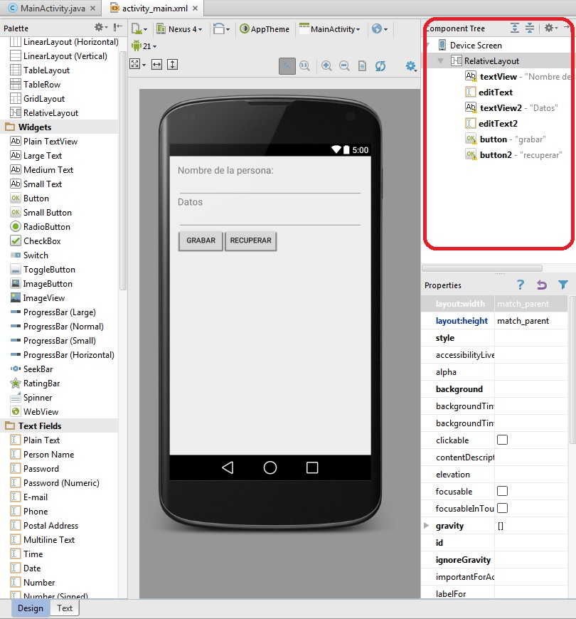
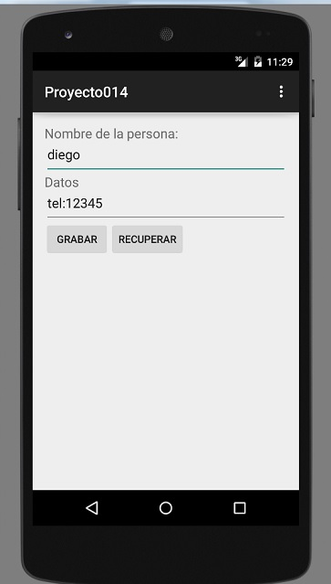
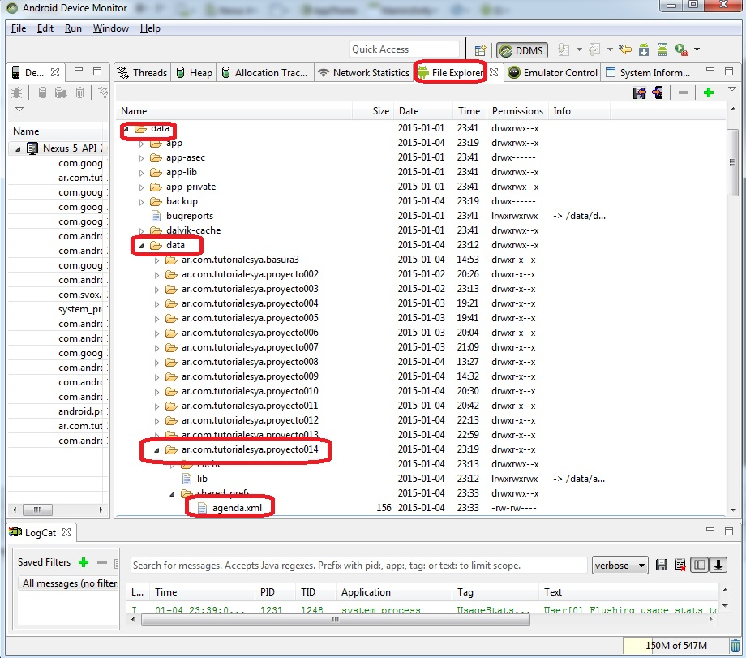
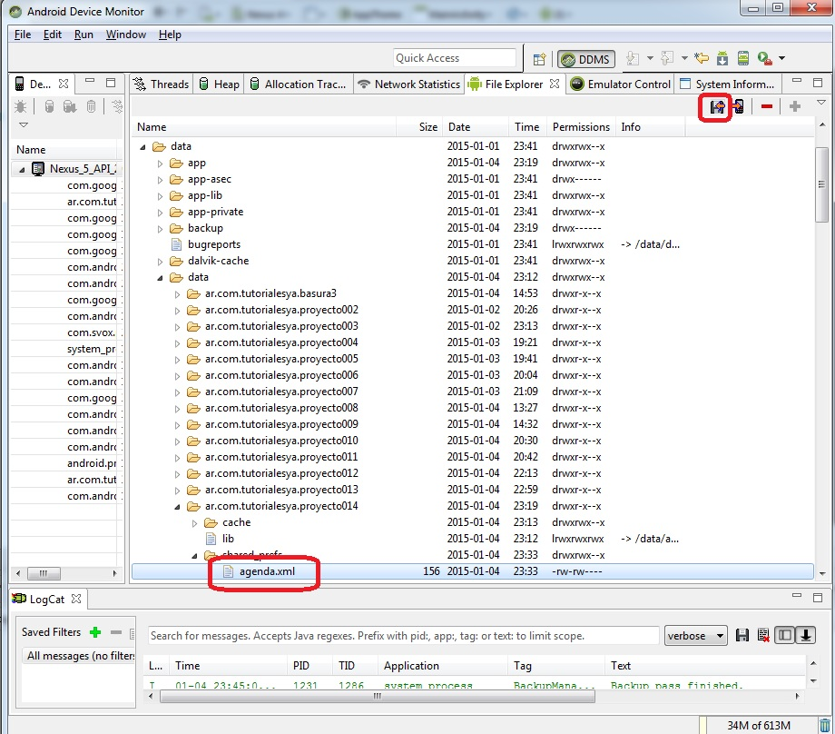
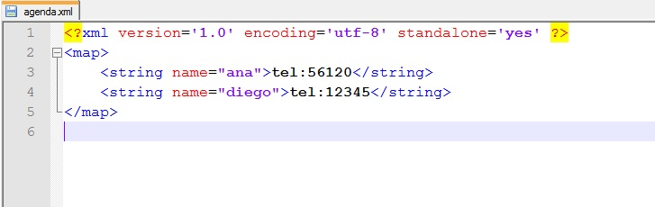
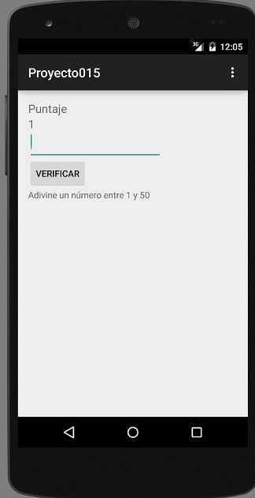

La plataforma de Android nos da varias facilidades para el almacenamiento permanente de datos (es decir que los mismos no se borran cuando se apaga o cierra la aplicación)
Según el tipo de necesidades utilizaremos alguno de estos métodos:
- Mediante la clase SharedPreferences.
- Mediante archivos de Texto.
- En una base de datos con acceso a SQL.
No será raro que una aplicación utilice más de uno de estos métodos para el almacenamiento de datos.
Cuando tenemos que almacenar una cantidad limitada de datos es adecuado utilizar la clase SharedPreferences. Por ejemplo configuraciones de la aplicación como pueden ser colores de pantalla, nivel actual en un juego, datos iniciales de controles de entrada de dato etc.
Problema 1:
Confeccionar un programa que solicite el ingrese del mail de una persona. Guardar el mail ingresado utilizando la clase SharedPreferences. Cada vez que se inicie la aplicación almacenar en el control EditText el último mail ingresado. Disponer un botón para almacenar el mail ingresado y finalizar el programa.
Crearemos un nuevo proyecto llamado proyecto013.
La interfaz visual a implementar es:

Es decir:
Disponemos un TextView la propiedad Text con "Ingrese el mail:".
Disponemos un EditText Disponemos un Button su propiedad Text con el valor confirmar su propiedad onClic con el valor ejecutar
El código java es:
package ar.com.tutorialesya.proyecto013;
import android.content.Context;
import android.content.SharedPreferences;
import android.support.v7.app.ActionBarActivity;
import android.os.Bundle;
import android.view.Menu;
import android.view.MenuItem;
import android.view.View;
import android.widget.EditText;
public class MainActivity extends ActionBarActivity {
private EditText et1;
@Override
protected void onCreate(Bundle savedInstanceState) {
super.onCreate(savedInstanceState);
setContentView(R.layout.activity_main);
et1=(EditText)findViewById(R.id.editText);
SharedPreferences prefe=getSharedPreferences("datos", Context.MODE_PRIVATE);
et1.setText(prefe.getString("mail",""));
}
@Override
public boolean onCreateOptionsMenu(Menu menu) {
// Inflate the menu; this adds items to the action bar if it is present.
getMenuInflater().inflate(R.menu.menu_main, menu);
return true;
}
@Override
public boolean onOptionsItemSelected(MenuItem item) {
// Handle action bar item clicks here. The action bar will
// automatically handle clicks on the Home/Up button, so long
// as you specify a parent activity in AndroidManifest.xml.
int id = item.getItemId();
//noinspection SimplifiableIfStatement
if (id == R.id.action_settings) {
return true;
}
return super.onOptionsItemSelected(item);
}
public void ejecutar(View v) {
SharedPreferences preferencias=getSharedPreferences("datos",Context.MODE_PRIVATE);
SharedPreferences.Editor editor=preferencias.edit();
editor.putString("mail", et1.getText().toString());
editor.commit();
finish();
}
}
Obtenemos la referencia del EditText:
et1=(EditText)findViewById(R.id.editText);
Obtenemos una referencia de un objeto de la clase SharedPreferences a través del método getSharedPreferences. El primer parámetro es el nombre del archivo de preferencias y el segundo la forma de creación del archivo (MODE_PRIVATE indica que solo esta aplicación puede consultar el archivo XML que se crea)
SharedPreferences prefe=getSharedPreferences("datos",Context.MODE_PRIVATE);
Para extraer los datos del archivo de preferencias debemos indicar el nombre a extraer y un valor de retorno si dicho nombre no existe en el archivo de preferencias (en nuestro ejemplo la primera vez que se ejecute nuestro programa como es lógico no existe el archivo de preferencias lo que hace que Android lo cree, si tratamos de extraer el valor de mail retornará el segundo parámetro es decir el String con una cadena vacía:
et1.setText(prefe.getString("mail",""));
Cuando se presiona el botón "Confirmar" lo que hacemos es grabar en el archivo de preferencias el contenido del EditText en una variable llamada "mail":
public void ejecutar(View v) {
SharedPreferences preferencias=getSharedPreferences("datos",Context.MODE_PRIVATE);
Editor editor=preferencias.edit();
editor.putString("mail", et1.getText().toString());
editor.commit();
finish();
}
Debemos crear un objeto de la clase Editor y obtener la referencia del objeto de la clase SharedPreferences que acabamos de crear. Mediante el método putString almacenamos en mail el valor del String cargado en el EditText. Luego debemos llamar al método commit de la clase Editor para que el dato quede almacenado en forma permanente en el archivo de preferencias. Esto hace que cuando volvamos a arrancar la aplicación se recupere el último mail ingresado.
Recordemos que el método finish de la clase Activity finaliza la actividad actual (como tenemos una aplicación con una sola actividad finalizará completamente nuestro programa.
Este proyecto lo puede descargar en un zip desde este enlace: proyecto013.zip
Comentarios extras.
El modo de operación del archivo puede ser:
MODE_PRIVATE solo la aplicación puede acceder al archivo de preferencias. MODE_WORLD_READABLE otras aplicaciones pueden consultar el archivo de preferencias MODE_WORLD_WRITEABLE otras aplicaciones pueden consultar y modificar el archivo. MODE_MULTI_PROCESS varios procesos pueden acceder (Requiere Android 2.3)
Cuando guardamos datos en el archivo de preferencias podemos almacenar distintos tipos de datos según el método que llamemos en el momento de grabar:
editor.putInt("edad",3);
editor.putBoolean("activo", true);
editor.putFloat("altura", 2.3f);
Cuando los recuperamos debemos indicar también que tipo de datos extraemos:
int e=prefe.getInt("edad", 0);
boolean acti=prefe.getBoolean("activo", false);
float alt=prefe.getFloat("altura", 0f);
Problema 2:
Confeccionar un programa que permita administrar una agenda personal. Nuestra clave será el nombre de la persona. La interfaz visual a implementar será similar a esta:
El código fuente en java es:
package ar.com.tutorialesya.proyecto014;
import android.content.Context;
import android.content.SharedPreferences;
import android.support.v7.app.ActionBarActivity;
import android.os.Bundle;
import android.view.Menu;
import android.view.MenuItem;
import android.view.View;
import android.widget.EditText;
import android.widget.Toast;
public class MainActivity extends ActionBarActivity {
private EditText et1,et2;
@Override
protected void onCreate(Bundle savedInstanceState) {
super.onCreate(savedInstanceState);
setContentView(R.layout.activity_main);
et1=(EditText)findViewById(R.id.editText);
et2=(EditText)findViewById(R.id.editText2);
}
@Override
public boolean onCreateOptionsMenu(Menu menu) {
// Inflate the menu; this adds items to the action bar if it is present.
getMenuInflater().inflate(R.menu.menu_main, menu);
return true;
}
@Override
public boolean onOptionsItemSelected(MenuItem item) {
// Handle action bar item clicks here. The action bar will
// automatically handle clicks on the Home/Up button, so long
// as you specify a parent activity in AndroidManifest.xml.
int id = item.getItemId();
//noinspection SimplifiableIfStatement
if (id == R.id.action_settings) {
return true;
}
return super.onOptionsItemSelected(item);
}
public void grabar(View v) {
String nombre=et1.getText().toString();
String datos=et2.getText().toString();
SharedPreferences preferencias=getSharedPreferences("agenda", Context.MODE_PRIVATE);
SharedPreferences.Editor editor=preferencias.edit();
editor.putString(nombre, datos);
editor.commit();
Toast.makeText(this,"Datos grabados",Toast.LENGTH_LONG).show();
}
public void recuperar(View v) {
String nombre=et1.getText().toString();
SharedPreferences prefe=getSharedPreferences("agenda", Context.MODE_PRIVATE);
String d=prefe.getString(nombre, "");
if (d.length()==0) {
Toast.makeText(this,"No existe dicho nombre en la agenda",Toast.LENGTH_LONG).show();
}
else {
et2.setText(d);
}
}
}
Definimos dos objetos de la clase EditText donde se ingresan el nombre de la persona y los datos de dicha persona:
private EditText et1,et2;
Cuando se presiona el botón grabar:
public void grabar(View v) {
String nombre=et1.getText().toString();
String datos=et2.getText().toString();
SharedPreferences preferencias=getSharedPreferences("agenda", Context.MODE_PRIVATE);
SharedPreferences.Editor editor=preferencias.edit();
editor.putString(nombre, datos);
editor.commit();
Toast.makeText(this,"Datos grabados",Toast.LENGTH_LONG).show();
}
Extraemos los dos datos de los EditText, creamos un objeto de la clas SharedPReferences con el nombre de "agenda".
Creamos un objeto de la clase Editor y procedemos a grabar en el archivo de preferencias mediante putString:
editor.putString(nombre, datos);
Significa que en el archivo de preferencias se almacena una entrada con el nombre de la persona y los datos de dicha persona.
Por otro lado tenemos la lógica para recuperar los datos de una persona de la agenda:
public void recuperar(View v) {
String nombre=et1.getText().toString();
SharedPreferences prefe=getSharedPreferences("agenda", Context.MODE_PRIVATE);
String d=prefe.getString(nombre, "");
if (d.length()==0) {
Toast.makeText(this,"No existe dicho nombre en la agenda",Toast.LENGTH_LONG).show();
}
else {
et2.setText(d);
}
}
Abrimos el archivo de preferencias y llamamos al método getString buscando el nombre ingresado en el et1. En el caso que lo encuentre retorna el dato asociado a dicha clave.
En el emulador podemos ver como ingresamos y recuperamos datos de la agenda:
Este proyecto lo puede descargar en un zip desde este enlace: proyecto014.zip
Android Device Monitor
Veamos una herramienta para poder entre otras cosas acceder al sistema de archivos del emulador de Android.
Vamos a arrancar el "Android Device Monitor", lo podemos ubicar en el menú de opciones:
Mediante este programa vamos a acceder al "File Explorer" del emulador para localizar el archivo de preferencias donde se ha guardado la agenda.
Seleccionamos la pestaña "File Explorer" y luego navegamos hasta la carpeta que contiene los datos de la aplicación, podemos ver que hay un archivo llamado agenda.xml (siempre y cuando ya hayamos ejecutado la aplicación y cargado datos):
Podemos extraer este archivo del dispositivo para analizarlo, para ello presionamos el ícono de la parte superior derecha estando seleccionado el archivo agenda.xml:
Luego podemos utilizar cualquier editor de texto para ver el contenido del archivo agenda.xml y veremos que tiene algo similar a esto (depende que datos usted cargó):
Como podemos ver el archivo xml tiene una marca map y dentro un conjunto de marcas string donde define una propiedad llamada name donde se almacena el nombre de la persona y en el interior de la marca sus datos.
La clase SharedPreferences se utiliza siempre que tenemos que almacenar un valor como clave (en este caso el nombre de la persona) y los datos asociados a dicha clave.
Problema propuesto
-
Realizar un programa que genere un número aleatorio entre 1 y 50, pedir que el operador lo adivine, informar si ganó o si el número es mayor o menor al ingresado. Cuando el operador lo adivine incrementar en uno el puntaje de juego. Cada vez que se ingrese a la aplicación mostrar el puntaje actual, es decir recordar el puntaje en un archivo de preferencias.
La interfaz visual de la aplicación a desarrollar es:

Este proyecto lo puede descargar en un zip desde este enlace: proyecto015.zip